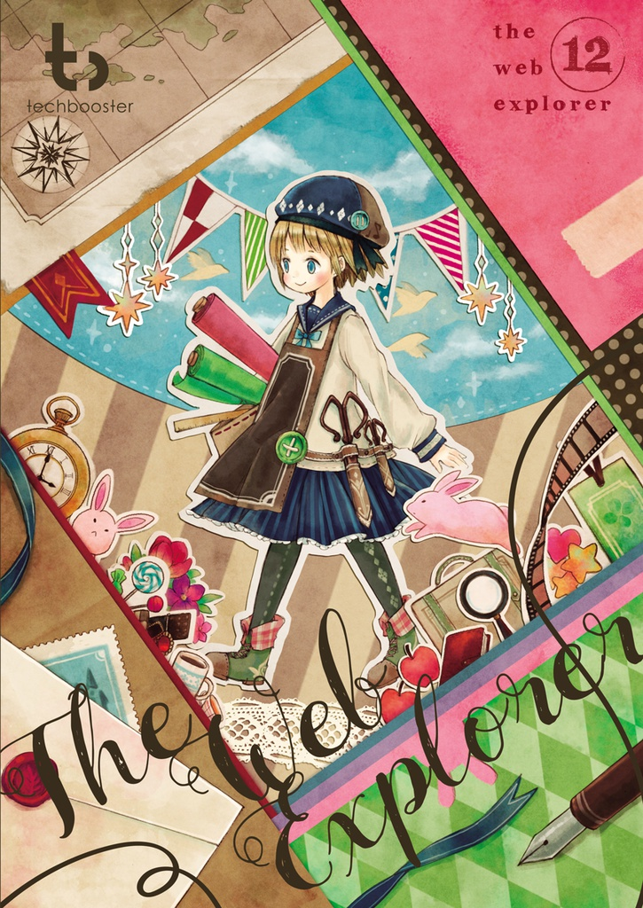
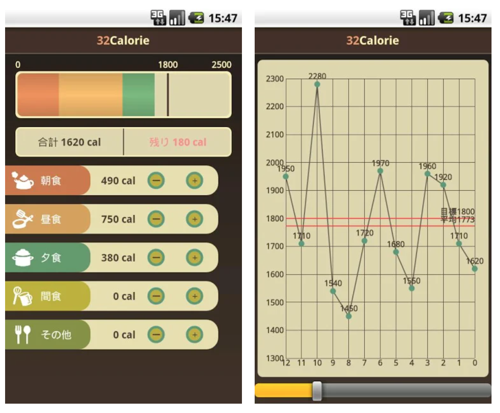

2020年
2020.10 CodeLunch.fm再開
ソフトウェアの技術トークを行っているポッドキャストを再開
個人活動
TypeScript
Design
https://codelunch.fm/
https://twitter.com/h13i32maru/status/1317311580372004865
2020.10 Jasper v1.0.0リリース
2016年から開発しているGitHub用のIssue Reader「Jasper v1.0.0」をリリース
個人活動
TypeScript
Electron
React
Design
GraphQL
styled-components
GitBook
https://jasperapp.io/
https://blog.h13i32maru.jp/entry/2020/10/05/172043
https://twitter.com/h13i32maru/status/1313033353516380160
2020.10 クックパッドアプリ(Android版)のリニューアル
リニューアルプロジェクトのAndroidエンジニアを担当
仕事
Android
VIPER Architecture
Kotlin
Dagger
https://static.cookpad.com/android-renewal-2020/
2020.6 食卓ラボリリース
食卓を楽しくするサービス「食卓ラボ」をiOS/Androidでリリース
個人活動
TypeScript
React Native
Design
styled-components
Node.js
Express
Google App Engine
Google Cloud Storage
Google Cloud SQL
https://dininglab.app/
https://blog.h13i32maru.jp/entry/2020/06/23/090000
https://twitter.com/h13i32maru/status/1275219696984326144
2020.1 クックパッドのレシピ投稿領域の部長職を辞退
2018年から担ってきた部長職を今期は辞退して、エンジニア職に戻った
仕事
https://blog.h13i32maru.jp/entry/2020/06/30/155452
2019年
2019.10 Trickleデスクトップ版リリース
2018年から開発している自分のアクティビティを保存する「Trickle」のデスクトップ版をリリース
個人活動
TypeScript
Electron
React
styled-components
Design
https://trickleapp.me/
https://blog.h13i32maru.jp/entry/2019/10/05/181449
https://twitter.com/h13i32maru/status/1181000469717471233
2018年
2018.11 Trickleリリース
自分のアクティビティを気兼ねなく書き溜める「Trickle」をiOS/Androidでリリース。同日にAbemaTVに出演
個人活動
JavaScript
TypeScript
Node.js
React Native
styled-components
Express
Google App Engine
Google Cloud Storage
Google Cloud SQL
https://trickleapp.me/
https://blog.h13i32maru.jp/entry/2018/11/12/092904
https://twitter.com/h13i32maru/status/1061779831543652353
https://times.abema.tv/news-article/5207398
2018.7 Jasperを無料化
2016年から開発しているGitHub用のIssue Reader「Jasper」を無料化
個人活動
https://jasperapp.io/
https://blog.h13i32maru.jp/entry/2018/07/17/083215
2018.4 クックパッド MYキッチンアプリをリリース
レシピ作者向けのアプリとしてゼロから作った「MYキッチン」アプリをiOS/Androidでリリース。現在は公開終了。
仕事
JavaScript
TypeScript
React Native
styled-components
Design
https://techlife.cookpad.com/entry/2018/04/16/100000
2018.4 Forkwellのエンジニアインタビュー掲載
Forkwellからリレー形式のエンジニアインタビューを受けて掲載されました
個人活動
https://pr.forkwell.com/2018-04-13-095525/
2018.1 クックパッド 投稿開発部 部長に就任
クックパッド株式会社のレシピ事業のユーザ投稿に責任を持つ部署「投稿開発部」の部長に就任
仕事
PdM
デザインスプリント
ユーザインタビュー
仮説検証
プロトタイプ
2017年
2017.8 iOS版クックパッドアプリの「レシピまとめ」をリリース
自分が投稿したレシピを自由にまとめることができる「レシピまとめ」をiOS版クックパッドアプリでリリース
仕事
PdM
PjM
2017.7 クックパッド サービス開発部 副部長に就任
クックパッド株式会社のレシピ事業全体に責任を持つ部署「サービス開発部」の副部長に就任
仕事
PdM
PjM
仮説検証
プロトタイプ
report.md
2017.1 Cookpad Tech Conf2017で登壇
「チームでプロダクト開発をするための取り組み」という内容でCookpad Tech Conf2017に登壇
仕事
https://techconf.cookpad.com/2017/h13i32maru.html
2016年
2016.11 Node学園祭2016で登壇
Jasperの作成で得た設計や開発の話をしました
個人活動
https://nodefest.jp/2016/schedule.html#conference
https://liginc.co.jp/332939
2016.9 Android版クックパッドアプリに「料理きろく」をリリース
自動で料理の写真を判定し、カレンダー形式で記録していく「料理きろく」をリリースしました
仕事
PdM
PjM
https://info.cookpad.com/pr/news/press_2017_0928
2016.6 GitHub用のIssue Reader「Jasper」をリリース
GitHubのIssueを効率的に閲覧することができる「Jasper」をMac/Window/Linuxでリリース
個人活動
JavaScript
TypeScript
Electron
styled-components
Design
https://jasperapp.io/
https://github.com/jasperapp/jasper
https://blog.h13i32maru.jp/entry/2016/06/08/090000
https://twitter.com/h13i32maru/status/740339713949605888
2015年

2015.12 「The Web Explorer」頒布
コミックマーケットC89で「The Web Explorer」に自作OSS「ESDoc」について執筆
個人活動
ESDoc
JavaScript
https://techbooster.booth.pm/items/178228
2015.11 Node学園祭2015に登壇
自作したJavaScript向けのドキュメンテーションツール「ESDoc」についてNode学園祭2015で登壇
個人活動
ESDoc
JavaScript
https://blog.h13i32maru.jp/entry/2015/11/08/140212
https://nodejs.connpass.com/event/20741/presentation/
2015.11 Android版クックパッドアプリで「おまかせ整理」をリリース
ブックマークしたレシピを自動的に分類する機能「おまかせ整理」をAndroid版クックパッドアプリでリリース
仕事
PdM
PjM
Android
Ruby on Rails
Solr
https://techlife.cookpad.com/entry/2015/09/30/170015
2015.5 ESDocリリース
ES2015以降のJavaScript向けのドキュメンテーションツール「ESDoc」をリリース
個人活動
JavaScript
ECMAScript2015
Node.js
Mocha
AST
Design
Elasticsearch
https://esdoc.org/
https://github.com/esdoc/esdoc
https://blog.h13i32maru.jp/entry/2015/05/06/221041
https://twitter.com/h13i32maru/status/595943068274008064
2014年
2014.12 「丸山食堂」を実施
2日間限定で「丸山食堂」という食堂を知人のカフェを借りてオープン
個人活動
https://blog.h13i32maru.jp/entry/2014/12/22/213239
2014.10 SPWeb版クックパッドで「撮るレシピ」リリース
本や雑誌などのレシピを写真で撮って保存する機能「撮るレシピ」をSPWeb版クックパッドでSPAとしてリリース
仕事
JavaScript
SPA
jQuery
https://techlife.cookpad.com/entry/2014/10/23/095814
2014.3 クックパッド株式会社に入社
レシピ事業を行っているクックパッド株式会社にWebフロントエンドエンジニアとして入社
仕事
2014.3 KLab株式会社を退職
2010年から努めていたKLab株式会社を退職
仕事
https://blog.h13i32maru.jp/entry/2014/03/01/211423
2014.2 NavyJS, NavyCreatorをリリース
Webフロントエンド向けのアプリケーションフレームワーク「NavyJS」と専用IDE「NavyCreator」をリリース。現在は開発終了。
個人活動
C++
Qt
JavaScript
Canvas
http://navyjs.org/
https://blog.h13i32maru.jp/entry/2014/02/26/080953
https://github.com/h13i32maru/navyjs
https://github.com/h13i32maru/navyjs-legacy2
https://github.com/h13i32maru/navyjs-framework-legacy2
https://github.com/h13i32maru/navyjs-legacy1
2011 ~ 2013年
2011 ~ 2013.2013.12 CodeLunch.fm開始
ソフトウェア技術系のトークをするポッドキャスト「CodeLunch.fm」を開始
個人活動
https://blog.h13i32maru.jp/entry/2013/12/15/225745
2011 ~ 2013.2013.11 Webフロントエンドパフォーマンスチューニングについて発信
業務で得たWebフロントエンドパフォーマンスチューニングについて内容を整理して発信
仕事
https://speakerdeck.com/h13i32maru/webhurontoendopahuomansutiyuningu
2011 ~ 2013.2013.8 「プロ野球グランドスラム」の開発
KLab株式会社で「プロ野球グランドスラム」のWebフロントエンドを開発
仕事
JavaScript
Knockout.js
パフォーマンスチューニング
jQuery
Android WebView
https://www.4gamer.net/games/229/G022958/20130820038/
2011 ~ 2013.2013.5 「ロードオプザ・ドラゴン」の開発
KLab株式会社で「ロードオプザ・ドラゴン」のサーバサイドを開発
仕事
PHP
https://octoba.net/archives/20130427-android-app-lods-191656.html
2011 ~ 2013.2013.4 「GIGABOT WARS」の開発
KLab株式会社で「GIGABOT WARS」のGUIアプリケーションフレームワークの開発
仕事
JavaScript
ngCore
https://gamebiz.jp/?p=101865
2011 ~ 2013.2012.7 RDBMSのBTree Indexについて発信
RDBMSのIndexにはなぜBTreeが使われているかということについて調査・考察した内容を発信
個人活動
https://blog.h13i32maru.jp/entry/2012/07/01/000000
2011 ~ 2013.2012.8 他社協業のSNSの開発
KLab株式会社で他社協業のSNSのAndroidを開発
仕事
Android
WebView
JavaScript

2011 ~ 2013.2011.8 32Calorieをリリース
摂取したカロリーを簡単に記録できるAndroidアプリをリリース
個人活動
Android
https://play.google.com/store/apps/details?id=jp.h13i32maru.calorie
https://blog.h13i32maru.jp/entry/20110821/1313925301
2011 ~ 2013.2010.8 KLab株式会社に入社
受託開発・ソーシャルゲーム開発を行っている「KLab株式会社」にソフトウェアエンジニアとして入社
仕事
2006 ~ 2010年
2006 ~ 2010.2010.6 「Custom Twitter」をリリース
Web版のTwitterをGoogle風の見た目にカスタマイズして遊べるGreasemonkey製のジョークツール「Custom Twitter」をリリース
個人活動
JavaScript
Greasemonkey
https://blog.h13i32maru.jp/entry/20100509/1273412605
https://blog.h13i32maru.jp/entry/20100620/1277013917
https://blog.h13i32maru.jp/entry/20100605/1275741713
2006 ~ 2010.2010.1 Cisco VPN Clientの問題を記載
Cisco VPN ClientをKNOPPIXなどの1CD Linuxで使う場合の問題について記載
仕事
Cisco
strace
エントロピー
https://blog.h13i32maru.jp/entry/20100115/1263561541
2006 ~ 2010.2010.1 Tooxをリリース
メモ帳、ブックマーク管理、お金の管理ができるWebサービス「Toox」をリリース。現在はサービス終了。
個人活動
Ruby
jQuery
Design
https://blog.h13i32maru.jp/entry/20100101/1262334689
https://blog.h13i32maru.jp/entry/20100326/1269635841
https://blog.h13i32maru.jp/entry/20100103/1262493641
2006 ~ 2010.2006.4 iZE株式会社に入社
受託開発やThin Client開発をしているiZE株式会社に入社。指紋認証搭載のUSBメモリ型Linux Thin Clientの開発
仕事
Linux
KNOPPIX
GRUB
C++
Qt
RDP
https://japan.zdnet.com/article/20361559/
https://news.mynavi.jp/article/20071126-a034/